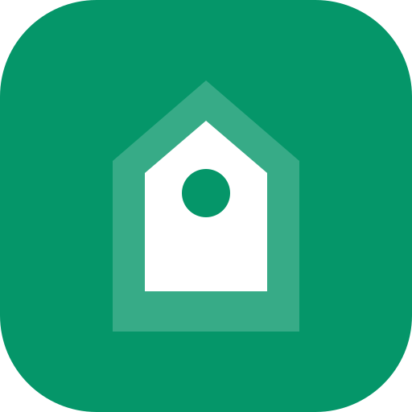

BERKAH
MEMUAT...
👤
Doa Harian
Memuat Doa...
Subuh
--:--
Dzuhur
--:--
Ashar
--:--
Maghrib
--:--
Isya
--:--
🕌
Waktu Sholat
📖
Al-Qur'an & Audio
📚
Hadist Bukhori
💼
Info Loker
📰
Berita
🛠️
Alat
🛒
Toko Kita
🎁
Donasi
💬
Live Chat
👥
Pengunjung
🤝
Donatur
📊
Laporan